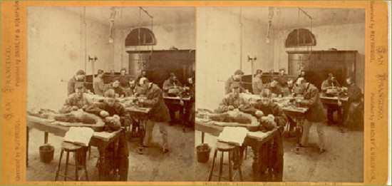

---
---
<!doctype html>
<html lang="en" xmlns="http://www.w3.org/1999/xhtml">
<head>
<meta http-equiv="Content-Type" content="text/html; charset=UTF-8" />
<meta name="viewport" content="width=device-width, initial-scale=1" />

<title>Photo - A History of UCSF</title>
<link href='http://fonts.googleapis.com/css?family=Gilda+Display|Nunito:300' rel='stylesheet' type='text/css'>
<link href="ucsf_history.css" rel="stylesheet" type="text/css" media="all" />
{% include google_analytics.html %}
</head>

<body>
<div id="mainbody">
{% include ucsf_banner.html %}
<div class="banner"><h1><a href="/">A History of UCSF</a></h1></div>
<div id="insidebody">
<div id="photocopy">
  <div id="photocopy_text">
    <div id="subhead">Medical Students in Toland Medical College Dissecting Room, ca 1870 </div><br />
      <br /> <div id="caption2">Photo by Eadweard Muybridge (Courtesy of the Bancroft Library, UC Berkeley). </div>
     <br/>
<br/><br/>
<br/>
</div>
</div>
<div id="sidebar">
<div id="sidenav_inside">{% include search_include.html %}<br />
    <div id="sidenavtype">
  <a href="story.html" class="sidenavtype"><strong>THE STORY</strong></a><br/>
  <br/>
  <a href="special_topics.html" class="sidenavtype"><strong>SPECIAL TOPICS</strong></a><br/><br/>
  <a href="people.html" class="sidenavtype"><strong>PEOPLE</strong></a><br/>
  <br/>
  <div id="sidenav_subnav_header"><strong><a href="photos.html" class="sidenav_subnav_type_visited">PHOTOS</a></strong></div>
  <br/>
  <a href="buildings.html" class="sidenavtype"><strong>BUILDINGS</strong></a><br/>
  <br/>
  <a href="index.html" class="sidenavtype"><strong>HOME</strong></a></div>
</div>
</div>
</div>
<br class="clearit" />
{% include footer.html %}
</div>
{% include bottom_js.html %}
</body>
</html>
